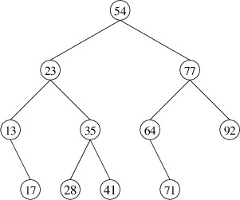

Removing from a Binary Search Tree
Before we can discuss how to remove an element from a binary search tree, we must first define exactly how we want the method to behave. Consider first the case in which the tree is built from immutable nodes. We are given a key and a binary search tree, and we want to return the result of removing the element having the given key. However, we need to decide what we will do if there is no element having the given key. This does not seem to be exceptional behavior, as we may have no way of knowing in advance whether the key is in the tree (unless we waste time looking for it). Still, we might want to know whether the key was found. We therefore need two pieces of information from this method - the resulting tree and a bool indicating whether the key was found. In order to accommodate this second piece of information, we make the bool an out parameter.
We can again break the problem into cases and use recursion, as we did for adding an element. However, removing an element is complicated by the fact that its node might have two nonempty children. For example, suppose we want to remove the element whose key is 54 in the following binary search tree:

In order to preserve the correct ordering of the keys, we should replace 54 with either the next-smaller key (i.e., 41) or the next-larger key (i.e., 64). By convention, we will replace it with the next-larger key, which is the smallest key in its right child. We therefore have a sub-problem to solve - removing the element with the smallest key from a nonempty binary search tree. We will tackle this problem first.
Because we will not need to remove the smallest key from an empty tree, we don’t need to worry about whether the removal was successful - a nonempty binary search tree always has a smallest key. However, we still need two pieces of information from this method:
- the element removed (so that we can use it to replace the element to be removed in the original problem); and
- the resulting tree (so that we can use it as the new right child in solving the original problem).
We will therefore use an out parameter for the element removed, and return the resulting tree.
Because we don’t need to worry about empty trees, and because the smallest key in a binary search tree is never larger than the key at the root, we only have two cases:
- The left child is empty. In this case, there are no keys smaller than the key at the root; i.e., the key at the root is the smallest. We therefore assign the data at the root to the out parameter, and return the right child, which is the result of removing the root.
- The left child is nonempty. In this case, there is a key smaller than the key at the root; furthermore, it must be in the left child. We therefore use a recursive call on the left child to obtain the result of removing the element with the smallest key from that child. We can pass as the out parameter to this recursive call the out parameter that we were given - the recursive call will assign to it the element removed. Because our nodes are immutable, we then need to construct a new node whose data and right child are the same as in the given tree, but whose left child is the tree returned by the recursive call. We return this node.
Having this sub-problem solved, we can now return to the original problem. We again have four cases, but one of these cases breaks into three sub-cases:
- The tree is empty. In this case the key we are looking for is not present, so we set the out parameter to false and return an empty tree.
- The key we are looking for is at the root. In this case, we can set
the out parameter to true, but in order to remove the
element, we have three sub-cases:
- The left child is empty. We can then return the right child (the result of removing the root).
- The right child is empty. We can then return the left child.
- Both children are nonempty. We must then obtain the result of removing the smallest key from the right child. We then construct a new node whose data is the element removed from the right child, the left child is the left child of the given tree, and the right child is the result of removing the smallest key from that child. We return this node.
- The key we are looking for is less than the key at the root. We then obtain the result of removing this key from the left child using a recursive call. We can pass as the out parameter to this recursive call the out parameter we were given and let the recursive call set its value. We then construct a new node whose data and right child are the same as in the given tree, but whose left child is the tree returned by the recursive call. We return this node.
- The key we are looking for is greater than the key at the root. This case is symmetric to the above case.
As we did with adding elements, we can optimize the methods described above for mutable nodes by modifying the contents of a node rather than constructing new nodes.